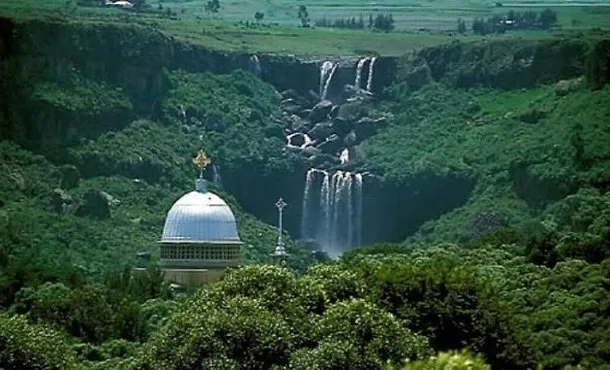

Debre Libanos (Amharic: ደብረ ሊባኖስ, Oromo: Debre libanose) is an Ethiopian Orthodox Tewahedo monastery, lying northwest of Addis Ababa in the North Shewa Zone of the Oromia Region. It was founded in 1284 by Saint Tekle Haymanot as Debre Atsbo and was renamed as Debre Libanos in the 15th century. He meditated in a cave above the current monastery for 29 years. The monastery's chief abbot, called the Ichege, was the second most powerful official in the Ethiopian Church after the Abuna.
The monastery complex sits on a terrace between a cliff and the gorge of one of the tributaries of the Abbay River (the Blue Nile). None of the original buildings of Debre Libanos survive, although David Buxton suspected "there are interesting things still to be found among the neighbouring cliffs".[1] Current buildings include the church over Tekle Haymanot's tomb, which Emperor Haile Selassie ordered constructed in 1961; a slightly older Church of the Cross, where Buxton was told a fragment of the True Cross is preserved; and five religious schools. The cave where the saint lived is in the nearby cliffs, which one travel guide describes as a five-minute walk away.[2] This cave contains a spring, whose water is considered holy and is the object of pilgrimages. the original route to Debre Libanos was through a cleft in the cliffs that line the eastern side of the Abbay.[3] In the late 20th century a road was laid from the main Addis Ababa – Debre Markos highway to the monastery; it is a little more than 4 kilometres (2.5 miles) long
HISTORY
Debre Libanos suffered great destruction during the invasion of Ahmad Gragn when one of his followers, Ura'i Abu Bakr, set it on fire 21 July 1531, despite the attempts of its community to ransom the church. Although the Ichege intervened to protect the Gambo people during the reign of Sarsa Dengel,the buildings were not completely rebuilt until after the visit of Emperor Iyasu the Great in 1699.
In the reign of Emperor Fasilides, after invading Oromos had ravaged the monastery's lands in Shewa the Emperor granted the Ichege his palace at Azazo, where the various Ichege lived.[8] From the 17th century until the matter was resolved in a synod convened by Emperor Yohannes II, the Ichege and the monks of Debre Libanos were the most important supporters of the Sost Lidet doctrine, in opposition to the House of Ewostatewos.[citation needed]
Emperor Haile Selassie's interest in Debre Libanos dates to when he was governor of the district of Selale. The Emperor notes in his autobiography that during the reconstruction of the church at Debre Libanos, an inscribed gold ring was found in the excavations, which he personally delivered to then Emperor Menelik II.[9] The reconstructed church was designed by Professor Hector Corfiato.[10]
Following the attempted assassination on his life on 19 February 1937, governor-general Rodolfo Graziani believed the monastery's monks and novices were involved in this attack, and unwilling to wait for the results of the official investigation, ordered Italian colonialists to massacre the inhabitants of this monastery. On 21 May of that year, 297 monks and 23 laymen were killed.[11] Overall, between 1,700 and 2,100 civilians were slaughtered in two mass executions on 21 May and 26 May.[12] When Buxton visited Debre Libanos in the mid-1940s, he found the remains of these victims were plainly visible ("Here were innumerable bones and skulls – bones in bags and bones in boxes, bones lying in confused heaps, awaiting burial").[3] A cross-shaped tomb was afterwards built to contain their remains, standing next to the parking lot.

Mosaics and Burials
Mosaics
Mosaics on the exterior front facade and stained-glass windows for the monastery were made and exhibited in London at the Festival Hall by E.O. Hevezi and G.J. Bajo.[14]
Burials
Tekle Haymanot died in about 1313, was buried in the cave above the monastery, and was reinterred in the monastery about 60 years later.
Abuna Basilios (23 April 1891 – 19 October 1970) the first Ethiopian-born Archbishop or Abuna, and later the first Patriarch, of the Ethiopian Orthodox Tewahedo Church.Debre Libanos Monastery
Northern Ethiopia.
Although no trace of the 13th-century monastery remains (a casualty of the Muslim–Christian Wars), the modern site is impressively set beneath a waterfall-rich cliff (many of the monks live in caves up there) on the edge of the large Jemma River Gorge and is a peaceful place to wander. The present church was built in 1961 by Haile Selassie, against the wishes of the local priests, after hearing a prophesy that a new church would ensure a long reign.
The church is monumental and pretty awful on the outside, but the stained-glass windows are attractive.
Debre Libanos has one of the most interesting church museums in Ethiopia. Besides the usual ecclesiastical items there are Italian guns, giant cooking pots, crowns of past emperors and their wives, musical instruments and an old wooden shackle. Fifteen minutes up the hill from the monastery is the cave of Tekla Haimanot (the monastery's founder), where the saint is said to have done all his praying. It’s also the source of Debre Libanos' famed holy water.
A monument in front of the church memorialises the hundreds of innocent priests, deacons and worshipers who were massacred here by the Italians following an assassination attempt on the notoriously brutal viceroy Graziani in 1937 (he was later imprisoned by the Italians as a war criminal for crimes against humanity).